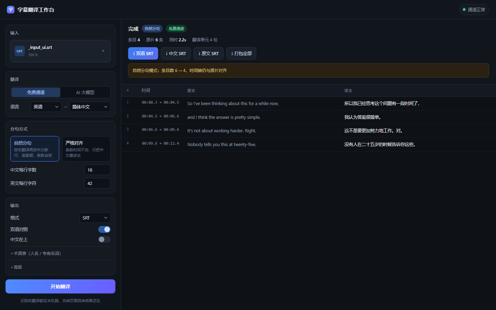

上传字幕或音频，它会先把被切碎的句子重新拼成完整句，再整句翻译， 最后按中文的呼吸节奏断行。导出双语 SRT，全程不上传任何文件。

左设置、右预览，翻完直接下三种格式
问题出在喂进去的东西 —— 一条字幕常常只是半句话。
翻译器连读四个没说完的句子，代词指代和转折承接全丢了。
四条合成一句翻，再按中文节奏切回两条 —— 意思接得上。
Windows 双击即用，不用配环境变量，不用命令行。
上面点「下载 ZIP」，或 git clone https://github.com/baiqz/subtitle-translator.git
start.bat
第一次会自动装依赖、备好 ffmpeg（约 200MB，走清华源）。之后启动只要几秒。
浏览器会自动打开。翻完下载双语、纯中文、纯原文三种字幕。
Mac / Linux 用户：
python3 -m pip install -r requirements.txt
python3 app.py字幕不好读，往往败在细节。
靠句末标点、引号闭合、时间空档、长度四个条件判断「这句话说完了没」，不完整的就往下拼。
英文按自己字符数切、中文按标点切，两边的断点就会错位。这里让中文先切，英文按比例跟。
21 个字硬按 18 切会成 15+6，不如一条折两行 —— 读起来反而更顺。
人名、产品名用占位符锁住，翻完再换回去，不会被机翻乱改。
默认的免费通道走 Google 接口，国内直连不通，需要代理。右上角有个圆点，点一下就知道通不通。
不通也照样能用：会自动改用免代理的备用通道（MyMemory，国内直连），只是逐条翻、慢一点。圆点是黄的，就说明正在走兜底。
想翻得更像人话就切「AI 大模型」，填个硅基流动或 DeepSeek 的 Key —— 国内直连。
首次会下载语音识别模型（small 约 480MB），只下一次。之后再处理音频就快了：
13 秒的英文音频，识别加翻译一共 8 秒左右。
想更快可以换成 tiny 模型，代价是识别准确率下降。
不会。音频识别在本机跑（faster-whisper），服务只监听 127.0.0.1，
别的机器连不进来。只有「待翻译的文字」会发给翻译接口。
字幕进：SRT / VTT / ASS / SSA / TXT。音频视频进：MP3 / WAV / M4A / MP4 / MKV 等（走 ffmpeg 解码都能吃）。
出口：SRT / VTT / ASS，各有双语、纯中文、纯原文三份。
默认「自然分段」会为了保证中文读得完，稍微挪动切点时间。要严格卡画面，就选「严格对齐」—— 条数和时间一条不动，只把中文塞进去，代价是中文可能切在词中间。
因为语音识别要跑本机模型，视频解码要 ffmpeg —— 这些在浏览器里做不了， 硬要做也得上传文件到别人的服务器，那就不是「全程本机」了。